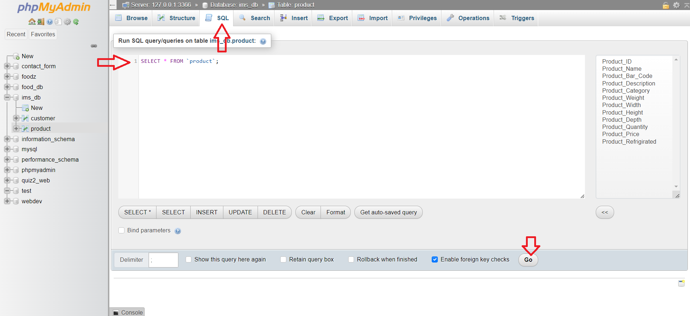

Lab 6: PDO
Instructions
In Lab 5 you designed your database and created it in phpMyAdmin. In this lab you
connect your PHP code to that database using PDO (PHP Data Objects).
You will write one reusable connection file, then implement the four CRUD operations (Create, Read, Update,
Delete) with prepared statements, group several queries in a transaction,
and display query results safely in an HTML table.
At the end of the lab, at least one service of your project must be fully working with PDO. The theory is in
the lecture Storing data with PHP (section III. PDO).
I. Why PDO?
PHP offers two extensions to talk to MySQL: mysqli (seen in the lecture) and PDO. Both work, but in this course we use PDO for the project because:
- Portability: PDO is a single API for about a dozen database systems (MySQL/MariaDB, PostgreSQL, SQLite, SQL Server, Oracle...). Changing the database mostly means changing the connection string. mysqli only works with MySQL/MariaDB.
-
Prepared statements made easy: PDO supports named placeholders
(
:email) and positional placeholders (?), and you can pass all values as one array toexecute(). mysqli only supports?and needsbind_param()with a type string. -
Exceptions: PDO can throw a
PDOExceptionon every error, so you never forget to check a return value. - Flexible fetching: rows can come back as associative arrays, objects, a single column, etc.
The most important point is security. A prepared statement sends the SQL structure and the data separately to the server, so data typed by a user can never be interpreted as SQL. This is the standard protection against SQL injection (see the lecture Security). Compare:
<?php
// NEVER do this: the user input is pasted inside the SQL string.
// If $_GET['id'] is "1 OR 1=1", the query returns every row of the table.
$sql = "SELECT * FROM products WHERE id = " . $_GET['id'];
$rows = $pdo->query($sql)->fetchAll();
// ALWAYS do this: the SQL has a placeholder, the value is sent separately.
$stmt = $pdo->prepare('SELECT * FROM products WHERE id = ?');
$stmt->execute([$_GET['id']]);
$row = $stmt->fetch();
$pdo->query().II. The example tables
All the examples of this lab use a small shop database. Open phpMyAdmin, create a database named
shop_lab with the collation utf8mb4_unicode_ci, then paste the following script in
the SQL tab and click Go (as in Lab 5). Of course, in your project you
will use your own tables; the code will be the same.
CREATE TABLE products (
id INT UNSIGNED NOT NULL AUTO_INCREMENT,
name VARCHAR(100) NOT NULL,
price DECIMAL(10,2) NOT NULL,
stock INT UNSIGNED NOT NULL DEFAULT 0,
created_at TIMESTAMP NOT NULL DEFAULT CURRENT_TIMESTAMP,
PRIMARY KEY (id),
UNIQUE KEY uq_products_name (name)
) ENGINE=InnoDB DEFAULT CHARSET=utf8mb4 COLLATE=utf8mb4_unicode_ci;
CREATE TABLE orders (
id INT UNSIGNED NOT NULL AUTO_INCREMENT,
product_id INT UNSIGNED NOT NULL,
quantity INT UNSIGNED NOT NULL,
created_at TIMESTAMP NOT NULL DEFAULT CURRENT_TIMESTAMP,
PRIMARY KEY (id),
CONSTRAINT fk_orders_product FOREIGN KEY (product_id) REFERENCES products (id)
) ENGINE=InnoDB DEFAULT CHARSET=utf8mb4 COLLATE=utf8mb4_unicode_ci;
INSERT INTO products (name, price, stock) VALUES
('USB keyboard', 2500.00, 15),
('Wireless mouse', 1800.00, 30),
('27" monitor', 42000.00, 4);

utf8mb4 stores every Unicode
character (Arabic, accents, emojis), while MySQL's old utf8 does not. InnoDB is the
storage engine that supports foreign keys and transactions (section V).III. A reusable connection file
Do not write new PDO(...) in every page. Put the credentials in one configuration file and the
connection code in one function that every page can include. A suggested structure inside your project
folder (see Lab 2):
your_project/
├── config/
│ ├── config.php <- real credentials, NOT committed to Git
│ └── config.example.php <- same file with fake values, committed
├── includes/
│ ├── db.php <- getConnection()
│ └── products_repository.php
├── products.php
└── .gitignore <- contains the line: config/config.php
The configuration file
<?php
// config/config.php
declare(strict_types=1);
const DB_HOST = '127.0.0.1';
const DB_PORT = 3306; // change it if your XAMPP MySQL uses another port
const DB_NAME = 'shop_lab';
const DB_USER = 'root'; // XAMPP default: OK on your own machine only
const DB_PASS = ''; // XAMPP default: empty password
root with no password)
is acceptable only for local development. It must never be used on a real server. In
production, create a dedicated MySQL user with a strong password and only the privileges the application needs
(SELECT, INSERT, UPDATE, DELETE on its own database), and keep the configuration file out of the
public web folder and out of Git.The connection function
The DSN (Data Source Name) describes the driver, host, port, database and character set. The options array configures how PDO behaves:
PDO::ATTR_ERRMODE => PDO::ERRMODE_EXCEPTION: every error throws aPDOException(this is the default since PHP 8, but write it explicitly).PDO::ATTR_DEFAULT_FETCH_MODE => PDO::FETCH_ASSOC: rows are returned as associative arrays ($row['name']) instead of arrays indexed twice, by name and by number.PDO::ATTR_EMULATE_PREPARES => false: use real prepared statements of MySQL instead of PDO simulating them, and get integers back as PHPint.charset=utf8mb4in the DSN: the connection uses the same encoding as the tables.
<?php
// includes/db.php
declare(strict_types=1);
require_once __DIR__ . '/../config/config.php';
function getConnection(): PDO
{
static $pdo = null; // keeps the same connection for the whole request
if ($pdo instanceof PDO) {
return $pdo;
}
$dsn = 'mysql:host=' . DB_HOST . ';port=' . DB_PORT . ';dbname=' . DB_NAME . ';charset=utf8mb4';
$options = [
PDO::ATTR_ERRMODE => PDO::ERRMODE_EXCEPTION,
PDO::ATTR_DEFAULT_FETCH_MODE => PDO::FETCH_ASSOC,
PDO::ATTR_EMULATE_PREPARES => false,
];
try {
$pdo = new PDO($dsn, DB_USER, DB_PASS, $options);
} catch (PDOException $e) {
// Details go to the server log (xampp/apache/logs/error.log), never to the visitor.
error_log('Database connection failed: ' . $e->getMessage());
http_response_code(500);
exit('Sorry, the service is temporarily unavailable. Please try again later.');
}
return $pdo;
}
display_errors on (the XAMPP default), prints the error message and the stack trace in the page:
host name, database name, user name, file paths... Never echo $e->getMessage() to the visitor.
Log it and show a generic message instead.Test the connection
<?php
// test_connection.php (delete it once it works)
declare(strict_types=1);
require_once __DIR__ . '/includes/db.php';
$pdo = getConnection();
$count = $pdo->query('SELECT COUNT(*) FROM products')->fetchColumn();
echo 'Connected. The products table contains ' . (int) $count . ' rows.';
Open http://localhost/your_project/test_connection.php. You should read
Connected. The products table contains 3 rows. If not, check that MySQL is started in the XAMPP
control panel, then check the database name, port, user and password.
IV. CRUD with prepared statements
A prepared statement is always used in three steps: prepare() the SQL with placeholders,
execute() it with the values, then read the result (fetch(),
fetchAll(), rowCount()...). We put all the queries of one table in one file of
functions, a "repository". Each function receives the PDO connection as a parameter.
- Named placeholders (
:name): readable when there are many values; the array keys must match the names. - Positional placeholders (
?): short; the values are given in the same order as the question marks. - Do not mix both kinds in the same query, and with emulation disabled, do not use the same named
placeholder twice in one query (use
:qtyand:qty2).
Create: INSERT and lastInsertId()
<?php
// includes/products_repository.php
declare(strict_types=1);
/** Inserts a product and returns its new id. */
function createProduct(PDO $pdo, string $name, float $price, int $stock): int
{
$sql = 'INSERT INTO products (name, price, stock) VALUES (:name, :price, :stock)';
$stmt = $pdo->prepare($sql);
$stmt->execute([
':name' => $name,
':price' => $price,
':stock' => $stock,
]);
// lastInsertId() returns the AUTO_INCREMENT value generated by this connection, as a string.
return (int) $pdo->lastInsertId();
}
Read: fetchAll(), fetch() and fetchColumn()
<?php
/** Returns all products (an empty array if there are none). */
function getAllProducts(PDO $pdo): array
{
// No external value: query() is enough.
$stmt = $pdo->query('SELECT id, name, price, stock FROM products ORDER BY name');
return $stmt->fetchAll();
}
/** Returns one product, or false if the id does not exist. */
function getProductById(PDO $pdo, int $id): array|false
{
$stmt = $pdo->prepare('SELECT id, name, price, stock FROM products WHERE id = ?');
$stmt->execute([$id]);
return $stmt->fetch(); // one row, or false when there is no (more) row
}
/** Searches products by name, with a limit. */
function searchProducts(PDO $pdo, string $term, int $limit = 20): array
{
$stmt = $pdo->prepare(
'SELECT id, name, price, stock FROM products WHERE name LIKE :term ORDER BY name LIMIT :limit'
);
// bindValue() lets us give the type explicitly: LIMIT needs an integer.
$stmt->bindValue(':term', '%' . $term . '%', PDO::PARAM_STR);
$stmt->bindValue(':limit', $limit, PDO::PARAM_INT);
$stmt->execute();
return $stmt->fetchAll();
}
/** Counts the products whose stock is below a threshold. */
function countLowStock(PDO $pdo, int $threshold): int
{
$stmt = $pdo->prepare('SELECT COUNT(*) FROM products WHERE stock < ?');
$stmt->execute([$threshold]);
return (int) $stmt->fetchColumn(); // the first column of the first row
}
fetch() when you expect one row
(search by primary key) or when you loop over a very large result one row at a time
(while ($row = $stmt->fetch()) { ... }). Use fetchAll() to get all rows in an
array at once; it is convenient for small and medium results such as a page of a list.Update and Delete: rowCount()
<?php
/** Updates a product. Returns the number of rows changed (0 or 1). */
function updateProduct(PDO $pdo, int $id, string $name, float $price, int $stock): int
{
$sql = 'UPDATE products SET name = :name, price = :price, stock = :stock WHERE id = :id';
$stmt = $pdo->prepare($sql);
$stmt->execute([
':name' => $name,
':price' => $price,
':stock' => $stock,
':id' => $id,
]);
return $stmt->rowCount();
}
/** Deletes a product. Returns true if a row was deleted. */
function deleteProduct(PDO $pdo, int $id): bool
{
$stmt = $pdo->prepare('DELETE FROM products WHERE id = ?');
$stmt->execute([$id]);
return $stmt->rowCount() === 1;
}
INSERT, UPDATE and
DELETE it returns the number of affected rows. With MySQL, an UPDATE that writes the
same values as before returns 0 even though the row exists. Do not rely on rowCount() after a
SELECT; count the rows of fetchAll() or use SELECT COUNT(*).Using the repository
<?php
// crud_demo.php
declare(strict_types=1);
require_once __DIR__ . '/includes/db.php';
require_once __DIR__ . '/includes/products_repository.php';
$pdo = getConnection();
try {
$id = createProduct($pdo, 'HDMI cable', 650.00, 50);
echo "Created product #$id<br>";
$product = getProductById($pdo, $id);
if ($product === false) {
echo 'Product not found<br>';
} else {
echo 'Read: ' . htmlspecialchars($product['name']) . '<br>';
}
echo 'Updated rows: ' . updateProduct($pdo, $id, 'HDMI cable 2m', 700.00, 45) . '<br>';
echo 'Deleted: ' . (deleteProduct($pdo, $id) ? 'yes' : 'no') . '<br>';
} catch (PDOException $e) {
error_log($e->getMessage());
echo 'A database error occurred.';
}
crud_demo.php twice without the delete line: the
second INSERT fails with a duplicate-entry error because of the UNIQUE key on
name. The SQL error code of a duplicate entry is available in
$e->errorInfo[1] (1062), which lets you show a friendly message such as "This product
already exists".V. Transactions
Some operations need several queries that must all succeed or all be
cancelled. Example: placing an order decreases the stock and inserts a row in orders.
If the second query fails after the first one succeeded, the stock would be wrong. A transaction solves
this:
$pdo->beginTransaction()starts the transaction (auto-commit is suspended).$pdo->commit()makes all the changes permanent.$pdo->rollBack()cancels all the changes made sincebeginTransaction().
<?php
/**
* Places an order: decreases the stock and records the order, atomically.
* Returns the id of the new order.
*/
function placeOrder(PDO $pdo, int $productId, int $quantity): int
{
try {
$pdo->beginTransaction();
// The condition "stock >= :min_stock" prevents a negative stock.
$stmt = $pdo->prepare(
'UPDATE products SET stock = stock - :qty WHERE id = :id AND stock >= :min_stock'
);
$stmt->execute([':qty' => $quantity, ':id' => $productId, ':min_stock' => $quantity]);
if ($stmt->rowCount() === 0) {
throw new RuntimeException('Unknown product or not enough stock.');
}
$stmt = $pdo->prepare('INSERT INTO orders (product_id, quantity) VALUES (?, ?)');
$stmt->execute([$productId, $quantity]);
$orderId = (int) $pdo->lastInsertId();
$pdo->commit();
return $orderId;
} catch (Throwable $e) {
if ($pdo->inTransaction()) {
$pdo->rollBack(); // nothing is changed in the database
}
throw $e; // let the caller decide what to display
}
}
<?php
// order_demo.php
declare(strict_types=1);
require_once __DIR__ . '/includes/db.php';
require_once __DIR__ . '/includes/products_repository.php';
try {
$orderId = placeOrder(getConnection(), 3, 10); // only 4 monitors in stock
echo "Order #$orderId placed.";
} catch (PDOException $e) { // must come first (see the note)
error_log($e->getMessage());
echo 'A database error occurred.';
} catch (RuntimeException $e) {
echo htmlspecialchars($e->getMessage()); // our own, safe message
}
CREATE TABLE or ALTER TABLE inside a transaction commits it implicitly in MySQL.
Keep transactions short and only for data changes. PDOException extends
RuntimeException, so its catch block must come before the
RuntimeException one, otherwise database errors (with their technical details) would be shown
to the user.VI. Displaying results in an HTML table
Data read from the database was, at some point, typed by a user. Printing it as is lets an attacker inject
HTML or JavaScript into your pages (XSS, see Security). Every value printed in
HTML must go through htmlspecialchars(), which converts < > & " ' into
HTML entities. Prepared statements protect the database; htmlspecialchars() protects the
page. You need both.
<?php
// includes/helpers.php
declare(strict_types=1);
/** Escapes a value for safe output in HTML (text and attribute values). */
function e(string|int|float|null $value): string
{
return htmlspecialchars((string) $value, ENT_QUOTES, 'UTF-8');
}
<?php
// products.php
declare(strict_types=1);
require_once __DIR__ . '/includes/db.php';
require_once __DIR__ . '/includes/helpers.php';
require_once __DIR__ . '/includes/products_repository.php';
$products = getAllProducts(getConnection());
?>
<!DOCTYPE html>
<html lang="en">
<head>
<meta charset="UTF-8">
<title>Products</title>
</head>
<body>
<h1>Products</h1>
<?php if (count($products) === 0): ?>
<p>No products yet.</p>
<?php else: ?>
<table>
<thead>
<tr>
<th>#</th>
<th>Name</th>
<th>Price (DZD)</th>
<th>Stock</th>
<th>Actions</th>
</tr>
</thead>
<tbody>
<?php foreach ($products as $product): ?>
<tr>
<td><?= e($product['id']) ?></td>
<td><?= e($product['name']) ?></td>
<td><?= e(number_format((float) $product['price'], 2, '.', ' ')) ?></td>
<td><?= e($product['stock']) ?></td>
<td>
<a href="product_edit.php?id=<?= e($product['id']) ?>">Edit</a>
<form method="post" action="product_delete.php">
<input type="hidden" name="id" value="<?= e($product['id']) ?>">
<button type="submit">Delete</button>
</form>
</td>
</tr>
<?php endforeach; ?>
</tbody>
</table>
<?php endif; ?>
</body>
</html>
GET
request, and GET requests must never modify data: browsers prefetch links, search engines follow
them, and a malicious page can trigger them with a simple image tag. Actions that change data use
POST.
<?php
// product_delete.php
declare(strict_types=1);
require_once __DIR__ . '/includes/db.php';
require_once __DIR__ . '/includes/products_repository.php';
if ($_SERVER['REQUEST_METHOD'] !== 'POST') {
http_response_code(405);
exit('Method not allowed.');
}
$id = filter_input(INPUT_POST, 'id', FILTER_VALIDATE_INT, ['options' => ['min_range' => 1]]);
if ($id === null || $id === false) {
http_response_code(400);
exit('Invalid product id.');
}
deleteProduct(getConnection(), $id);
header('Location: products.php', true, 303);
exit;
filter_input(), the 303 redirect
and the full validation of form data are explained in Lab 8. Deleting a product
that already has orders fails because of the foreign key: catch the PDOException and show a
clear message.VII. Your turn
Apply what you learned to your own project, step by step:
- Create
config/config.phpwith your database name, and aconfig/config.example.phpwith fake values. Addconfig/config.phpto.gitignoreand commit the example file only. - Copy
includes/db.phpandincludes/helpers.phpinto your project. Write atest_connection.phpthat counts the rows of one of your tables, run it, then delete it. - Choose one service of your project (for example: products, courses, appointments, posts...). Create
includes/<service>_repository.phpwith five functions: create, get all, get by id, update, delete. Every query that receives a value must be a prepared statement. - Write a list page that displays the rows of the service in an HTML table. Every printed value goes
through
e(). - Add a page with a form to create a new row and a page to edit an existing one
(
?id=...in the URL, pre-filled form). UselastInsertId()to redirect to the new row androwCount()to tell the user whether something changed. - Add a Delete button (a
POSTform) on each row of the list. - Find one operation in your project that touches two tables (an order and its stock, a reservation and the available seats, a post and its tags...) and implement it with a transaction. Test the rollback by making the second query fail on purpose (for example, a wrong column name), and check in phpMyAdmin that the first query was cancelled.
- Try to break your pages: type
' OR 1=1 --and<script>alert(1)</script>in your forms and in the URL. Nothing should happen except the text being stored and displayed as plain text. - Commit and push your work to your team repository.
Deliverables
- A single connection file (
getConnection()) using a DSN withcharset=utf8mb4,ERRMODE_EXCEPTION,FETCH_ASSOCandATTR_EMULATE_PREPARES => false. - Database credentials kept in a configuration file that is not committed; no credentials or error details shown to visitors.
- Full CRUD (create, list, view/edit, update, delete) for at least one service of your project, written with PDO prepared statements only.
- At least one multi-query operation protected by a transaction
(
beginTransaction/commit/rollBack). - All database values displayed with
htmlspecialchars(). - Work pushed to your team repository. This lab counts toward the PHP/AJAX milestone of the Deadlines table.